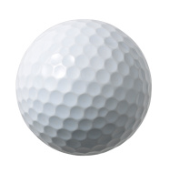

<!--
  This template loads for the 'tab.friend-detail' state (app.js)
  'friend' is a $scope variable created in the FriendsCtrl controller (controllers.js)
  The FriendsCtrl pulls data from the Friends service (service.js)
  The Friends service returns an array of friend data
-->
<ion-view view-title="{{chat.name}}">
  <ion-content class="padding">
    <div class="list card">
      <div class="item item-avatar">
        
        <h2>{{chat.par}}</h2>
        <p>Yards: 1,000</p>
      </div>
      <div class="item item-body">
        <p>
          Yards to Hole: {{yrdToHole}}
        </p>
      </div>
      <div class="item item-body">
        <p>
          Recommended Club: {{recommendClub}}
        </p>
      </div>
      <div class="item item-body">
        <p>
          Wind Speed: <b>{{windSpeed + ' Mph'}}</b>
        </p>
        <p>
          Wind Direction: <b>{{windDirection}} </b>
        </p>
      </div>
    </div>
    <a class="button button-block button-balanced" href="#/tab/saveClub/{{chat.id}}">Save Club</a>
    <a class="button button-block button-balanced" href="#/tab/map/{{chat.id}}">View Map</a>
    <div rotate degrees="{{deg}}"></div>
  </ion-content>
</ion-view>
